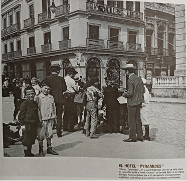
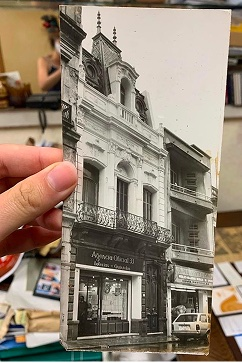
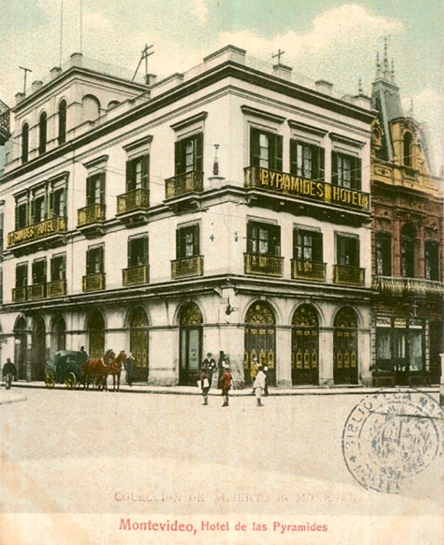
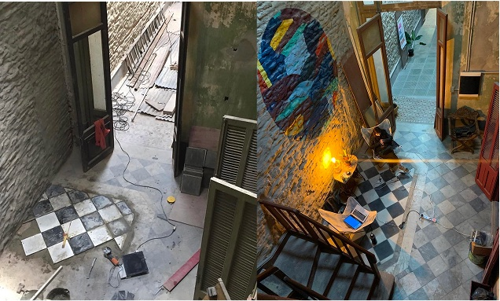

Nuestro patrimonio
Un edificio con memoria
En 1896, la familia Castro Aresti, de raíces españolas y con fuertes vínculos en el comercio portuario, erigió una imponente casona de dos pisos sobre la calle Sarandí, justo al lado del entonces renombrado Hotel de las Pyramides. Esta residencia, que albergaba ocho habitaciones, contaba con puertas altas y vitrales grabados que reflejaban el orgullo y la posición de la familia, convirtiéndose en un símbolo destacado dentro del vibrante entramado de la Ciudad Vieja.
Con el paso del tiempo, el deterioro de la zona fue transformando el destino de la casona. La familia decidió mudarse, y la propiedad fue convertida en un anexo del hotel, luego utilizada como depósito, hasta que finalmente fue ocupada. Los vitrales, la fachada y la rica historia del edificio quedaron sumidos en un silencio que contrasta con su glorioso pasado.



El regreso
El abuelo de Carolina Ferreyra la adquirió con el sueño de restaurarla. Ese sueño pasó de generación en generación hasta que Carolina, artista visual, decidió hacerlo realidad. Primero montó su atelier en la escalera de entrada, el único rincón habitable, y empezó a vender sus pinturas. Los turistas que pasaban preguntaban qué había más arriba. La respuesta siempre era la misma: una historia que valía la pena recuperar.
La restauración fue un proceso largo, artesanal y profundamente colectivo. Amigos, familia y desconocidos que llegaban con un pincel prestado pusieron manos y corazón en cada pared. Carolina documentó cada avance y cada tropiezo en redes sociales, construyendo una comunidad alrededor del proyecto antes de que el espacio abriera sus puertas.
El edificio, catalogado con grado 3 de protección patrimonial, exigía intervenciones bajo estándares estrictos: la fachada, el techo, las condiciones lumínicas y el carácter de cada cuarto debían preservarse. Esa restricción se convirtió en una guía: no transformar, sino revelar.
Hoy
La restauración terminó. Las paredes que alguna vez guardaron el bullicio de una familia portuaria ahora alojan exposiciones, talleres, músicos, tatuadores, artistas residentes y eventos de todo tipo.
Federico Vaucheret se sumó al equipo de gestión para acompañar esa programación y hacer del espacio un lugar vivo, en constante movimiento.
Modo Casona es hoy un centro cultural en el corazón de Ciudad Vieja: un lugar donde el patrimonio no se contempla desde afuera, sino que se habita.
